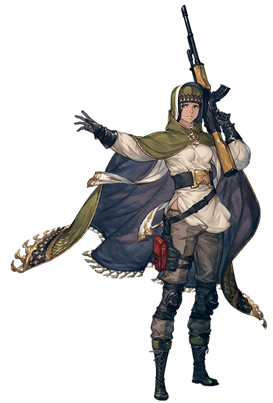

寄叶二号B型
冷静的意志之刃，作为人形机械兵部队【寄叶】的一员被派遣，战斗通用性的人工智能，既能用剑近距离攻击，也能利用支援系统【pod】进行远程攻击。因为装备着战斗用眼罩，所以几乎看不到她的眼神，寄叶部队成员没有名字 全部用代号称呼，虽然原则上禁止拥有感情，但是因为个体差异，2B有着沉着冷静的性格。
返回
NieR:Automata

寄叶9号S型
脆弱温柔之魂，性格温柔。虽然没有攻击机能 但在调查任务方面强化了的机体，作为黑客在情报收集方面见长的寄叶部队的一员，在寄叶部队中是感情表现比较丰富的类型。
返回
NieR:Automata

寄叶A型二号
过去与憎恶之涡?A型在现在的机体没有运用的近身攻击方面强化了，作为寄叶部队的原型体(实验体)，为了2B与9S等正式体的实用化而被使用。寡言少语的性格，经常独自行动。
返回
NieR:Automata

